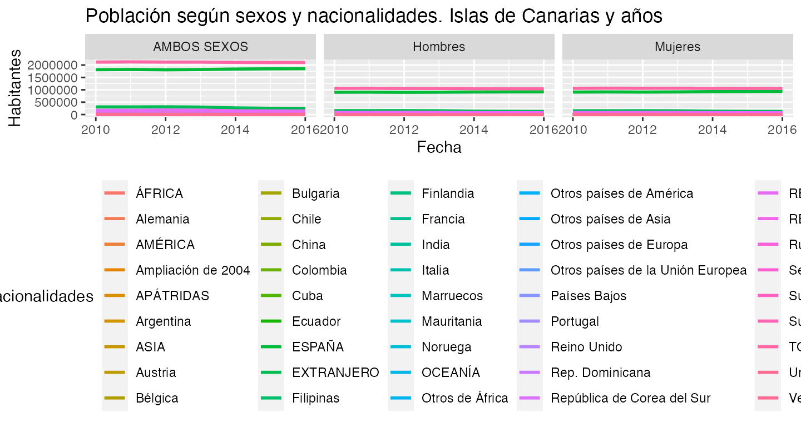

vignettes/my-vignette.Rmd
my-vignette.RmdThe Canary Islands Statistics Institute (Instituto Canario de Estadítica, istacbase)1 is the central organ of the autonomous statistical system and official research center of the Government of the Canary Islands, created and regulated by Law 1/1991 of 28 January, Statistics of the Autonomous Community of the Canary Islands (CAC), and among others, assigns the following functions:
Providing statistical information: The istacbase has among its objectives to provide, with technical and professional independence, statistical information of interest to the CAC, taking into account the fragmentation of the territory and its singularities and complying with the principles established in the Code of Good Practices of the European Statistics.
Coordinate public statistical activity: The istacbase is the body responsible for promoting, managing and coordinating the public statistical activity of the CAC, assuming the exercise of the statutory competence provided for in Article 30, paragraph 23, of the Statute of Autonomy of the Canary Islands .
To help provide access to this rich source of information, istac themselves, provide a well structured API2. While this API is very useful for integration into web services and other high-level applications, it becomes quickly overwhelming for researchers who have neither the time nor the expertise to develop software to interface with the API. This leaves the researcher to rely on manual bulk downloads of spreadsheets of the data they are interested in. This too is can quickly become overwhelming, as the work is manual, time consuming, and not easily reproducible. The goal of the istacbaser R-package is to provide a bridge between these alternatives and allow researchers to focus on their research questions and not the question of accessing the data. The istacbaser R-package allows researchers to quickly search and download the data of their particular interest in a programmatic and reproducible fashion; this facilitates a seamless integration into their workflow and allows analysis to be quickly rerun on different areas of interest and with realtime access to the latest available data.
istacbaser R-package:POSIXct dates for easy integration into plotting and time-series analysis techniquesgrep style searching for data descriptions and namesThe first step would be searching for the data you are interested in. istacbase_search() provides grep style searching of all available indicators from the istacbase API and returns the indicator information that matches your query.
cache
For performance and ease of use, a cached version of useful information is provided with the istacbaser R-package. This data is called cache and provides a snapshot of available islands, indicators, and other relevant information. cache is by default the the source from which istacbase_search() and istacbase() uses to find matching information. The structure of cache is as follows
library(istacbaser)
str(cache, max.level = 1)## 'data.frame': 5412 obs. of 11 variables:
## $ tema : chr "Territorio y medio ambiente" "Territorio y medio ambiente" "Territorio y medio ambiente" "Territorio y medio ambiente" ...
## $ subtemaI : chr "Territorio y usos del suelo" "Territorio y usos del suelo" "Territorio y usos del suelo" "Territorio y usos del suelo" ...
## $ subtemaII : chr "Estadística del Territorio" "Estadística del Territorio" "Estadística del Territorio" "Estadística del Territorio" ...
## $ datos publicadosI : chr "Resultados principales. Canarias" "Resultados principales. Canarias" "Resultados principales. Canarias" "Resultados principales. Canarias" ...
## $ datos publicadosII: chr NA NA NA NA ...
## $ apijson : chr "http://www.gobiernodecanarias.org/istac/jaxi-istac/tabla.do?accion=jsonMtd&uuidConsulta=b73d4c68-3f80-4b24-b890-8a555c850c84" "http://www.gobiernodecanarias.org/istac/jaxi-istac/tabla.do?accion=jsonMtd&uuidConsulta=25911ebf-c5b2-41a6-a9e9-7d21b1e01760" "http://www.gobiernodecanarias.org/istac/jaxi-istac/tabla.do?accion=jsonMtd&uuidConsulta=017492bd-f646-45e1-ba8a-4afbfbae0c1a" "http://www.gobiernodecanarias.org/istac/jaxi-istac/tabla.do?accion=jsonMtd&uuidConsulta=ac45f470-2546-4e56-ba15-ec2a42235928" ...
## $ lista_tablas : chr NA NA NA NA ...
## $ titulo : chr "Superficie por islas de Canarias." "Superficie por principales islotes de Canarias." "Número y superficie de los roques por islas de Canarias." "Superficie según zonas altimétricas por provincias de Canarias." ...
## $ origen : chr "Instituto Canario de Estadística (ISTAC), Instituto Nacional de Estadística (INE) y Dirección General del Insti"| __truncated__ "Instituto Canario de Estadística (ISTAC), Instituto Nacional de Estadística (INE) y Dirección General del Insti"| __truncated__ "Instituto Canario de Estadística (ISTAC) a partir de datos del Instituto Geográfico Nacional." "Instituto Canario de Estadística (ISTAC), Instituto Nacional de Estadística (INE) y Dirección General del Insti"| __truncated__ ...
## $ encuesta : chr "Estadística del Territorio" "Estadística del Territorio" "Estadística del Territorio" "Estadística del Territorio" ...
## $ ID : chr "ter.ter.est.res.1" "ter.ter.est.res.2" "ter.ter.est.res.3" "ter.ter.est.res.4" ...istacbase_search()
istacbase_search() searches through the cache data frame to find indicators that match a search pattern. An example of the structure of this data frame is below
| tema | subtemaI | subtemaII | datos publicadosI | datos publicadosII | apijson | lista_tablas | titulo | origen | encuesta | ID | |
|---|---|---|---|---|---|---|---|---|---|---|---|
| 9801 | Sociedad | Salud | Encuesta de Salud de Canarias (ESC) | ESC 2009 | III. Hábitos de vida | http://www.gobiernodecanarias.org/istac/jaxi-istac/tabla.do?accion=jsonMtd&uuidConsulta=b1834d59-afb7-459e-b3b2-990fdaea7ae0 | NA | Población de 16 y más años según clasificación de consumo de tabaco por comarcas. 2009. | Instituto Canario de Estadística (ISTAC) y Servicio Canario de la Salud (SCS). | Encuesta de Salud de Canarias | soc.sal.enc.esc.4310 |
| 9811 | Sociedad | Salud | Encuesta de Salud de Canarias (ESC) | ESC 2009 | III. Hábitos de vida | http://www.gobiernodecanarias.org/istac/jaxi-istac/tabla.do?accion=jsonMtd&uuidConsulta=cbd73c95-1984-444f-88bb-98045f477680 | NA | Población de 16 y más años fumadora según frecuencia de consumo de tabaco y sexos. Canarias. 2009. | Instituto Canario de Estadística (ISTAC) y Servicio Canario de la Salud (SCS). | Encuesta de Salud de Canarias | soc.sal.enc.esc.4311 |
By default the search is done over the titulo field and returns all the columns of the matching rows. The ID values are inputs into istacbase(), the function for downloading the data. To return the key columns ID and titulo for the cache data frame, you can set extra = TRUE.
library(istacbaser)
busqueda <- istacbase_search(pattern = "parado")
head(busqueda)## tema subtemaI
## 308 Demografía Población
## 482 Sociedad Calidad de Vida
## 485 Sociedad Calidad de Vida
## 534 Sociedad Calidad de Vida
## 748 Sociedad Calidad de Vida
## 793 Sociedad Calidad de Vida
## subtemaII
## 308 Censos de Población y Viviendas
## 482 Encuesta de ingresos y condiciones de vida de los hogares canarios (EICV-HC)
## 485 Encuesta de ingresos y condiciones de vida de los hogares canarios (EICV-HC)
## 534 Encuesta de ingresos y condiciones de vida de los hogares canarios (EICV-HC)
## 748 Encuesta de ingresos y condiciones de vida de los hogares canarios (EICV-HC)
## 793 Encuesta de ingresos y condiciones de vida de los hogares canarios (EICV-HC)
## datos publicadosI
## 308 Resultados detallados. Municipios por islas de Canarias. 1-11-2011
## 482 EICV-HC 2013
## 485 EICV-HC 2013
## 534 EICV-HC 2013
## 748 EICV-HC 2007
## 793 EICV-HC 2007
## datos publicadosII
## 308 <NA>
## 482 Empleo.
## 485 Empleo.
## 534 Pobreza, ingresos y situación económica.
## 748 Empleo.
## 793 Pobreza, ingresos y situación económica.
## apijson
## 308 http://www.gobiernodecanarias.org/istac/jaxi-istac/tabla.do?accion=jsonMtd&uuidConsulta=98417e88-69e1-49cf-bcad-2deb6463a24c
## 482 http://www.gobiernodecanarias.org/istac/jaxi-istac/tabla.do?accion=jsonMtd&uuidConsulta=b76018b8-eae9-4bc4-a580-c729ff3c7771
## 485 http://www.gobiernodecanarias.org/istac/jaxi-istac/tabla.do?accion=jsonMtd&uuidConsulta=70e642c0-60b6-429e-9b69-0c68bccdbd0a
## 534 http://www.gobiernodecanarias.org/istac/jaxi-istac/tabla.do?accion=jsonMtd&uuidConsulta=570794e8-8792-4364-aea3-6f514db51c3f
## 748 http://www.gobiernodecanarias.org/istac/jaxi-istac/tabla.do?accion=jsonMtd&uuidConsulta=db68fa6c-9252-4fbe-b0af-161d90edf2f5
## 793 http://www.gobiernodecanarias.org/istac/jaxi-istac/tabla.do?accion=jsonMtd&uuidConsulta=3d3088e0-96e1-4736-b516-1696db062366
## lista_tablas
## 308 <NA>
## 482 <NA>
## 485 <NA>
## 534 <NA>
## 748 <NA>
## 793 <NA>
## titulo
## 308 Viviendas familiares principales u hogares según el número de parados de 16 a 64 años. Municipios por islas de Canarias. 1-11-2011.
## 482 Hogares según número de parados por islas. 2013.
## 485 Hogares según número de parados y tamaño del hogar por islas. 2013.
## 534 Hogares según umbral de pobreza y número de parados en el hogar. Canarias. 2013.
## 748 Hogares según número de parados por comarcas. 2007.
## 793 Hogares según umbral de pobreza y número de parados. Canarias. 2007.
## origen
## 308 Instituto Canario de Estadística (ISTAC) a partir de datos del Instituto Nacional de Estadística (INE).
## 482 Instituto Canario de Estadística (ISTAC).
## 485 Instituto Canario de Estadística (ISTAC).
## 534 Instituto Canario de Estadística (ISTAC).
## 748 Instituto Canario de Estadística (ISTAC).
## 793 Instituto Canario de Estadística (ISTAC).
## encuesta
## 308 Censos de Población y Viviendas
## 482 Encuesta de ingresos y condiciones de vida de los hogares canarios
## 485 Encuesta de ingresos y condiciones de vida de los hogares canarios
## 534 Encuesta de ingresos y condiciones de vida de los hogares canarios
## 748 Encuesta de ingresos y condiciones de vida de los hogares canarios
## 793 Encuesta de ingresos y condiciones de vida de los hogares canarios
## ID
## 308 dem.pob.cen.res.430
## 482 soc.cal.enc.eic.603
## 485 soc.cal.enc.eic.606
## 534 soc.cal.enc.eic.655
## 748 soc.cal.enc.eic.869
## 793 soc.cal.enc.eic.914Other fields can be searched by simply changing the fields parameter. For example
library(istacbaser)
EPA_busqueda <- istacbase_search(pattern = "Encuesta de Población Activa", fields = "encuesta")
head(EPA_busqueda)## tema subtemaI subtemaII datos publicadosI
## 14121 Empleo Encuesta de Población Activa (EPA) <NA> Avance datos EPA
## 14131 Empleo Encuesta de Población Activa (EPA) <NA> Avance datos EPA
## 14141 Empleo Encuesta de Población Activa (EPA) <NA> Avance datos EPA
## 14151 Empleo Encuesta de Población Activa (EPA) <NA> Avance datos EPA
## 14161 Empleo Encuesta de Población Activa (EPA) <NA> Avance datos EPA
## 14171 Empleo Encuesta de Población Activa (EPA) <NA> Avance datos EPA
## datos publicadosII
## 14121 <NA>
## 14131 <NA>
## 14141 <NA>
## 14151 <NA>
## 14161 <NA>
## 14171 <NA>
## apijson
## 14121 http://www.gobiernodecanarias.org/istac/jaxi-istac/tabla.do?accion=jsonMtd&uuidConsulta=3df3cf8b-9c8d-4cb6-bd17-19c0aa5fd26b
## 14131 http://www.gobiernodecanarias.org/istac/jaxi-istac/tabla.do?accion=jsonMtd&uuidConsulta=cae96d81-ca6f-4906-9a79-679e8460f9d0
## 14141 http://www.gobiernodecanarias.org/istac/jaxi-istac/tabla.do?accion=jsonMtd&uuidConsulta=d28e8036-16c8-44f7-91a8-1cc46738e0c8
## 14151 http://www.gobiernodecanarias.org/istac/jaxi-istac/tabla.do?accion=jsonMtd&uuidConsulta=160d5ebb-6153-4bd1-b58a-4177033de928
## 14161 http://www.gobiernodecanarias.org/istac/jaxi-istac/tabla.do?accion=jsonMtd&uuidConsulta=921f39e6-5b53-44f6-ac2c-bec77a75cebb
## 14171 http://www.gobiernodecanarias.org/istac/jaxi-istac/tabla.do?accion=jsonMtd&uuidConsulta=5e14c5e4-66e4-48df-ba7e-75ace4f27531
## lista_tablas
## 14121 Avance datos EPA. Canarias
## 14131 Avance datos EPA. Canarias
## 14141 Avance datos EPA. Canarias
## 14151 Avance datos EPA. Canarias
## 14161 Avance datos EPA. Canarias
## 14171 Avance datos EPA. Canarias
## titulo
## 14121 Población de 16 y más años según relaciones con la actividad económica e indicadores. Canarias. 2017 Tercer trimestre.
## 14131 Población de 16 y más años según relaciones con la actividad económica, grupos de edad y sexos. Canarias. 2017 Tercer trimestre.
## 14141 Población de 16 y más años según relaciones con la actividad económica, nacionalidades y sexos. Canarias. 2017 Tercer trimestre.
## 14151 Población activa según sectores económicos. Canarias. 2017 Tercer trimestre.
## 14161 Población ocupada según tipos de jornadas y sexos. Canarias. 2017 Tercer trimestre.
## 14171 Población asalariada según tipos de contratos y sexos. Canarias. 2017 Tercer trimestre.
## origen
## 14121 Instituto Canario de Estadística (ISTAC) a partir de datos del Instituto Nacional de Estadística (INE).
## 14131 Instituto Canario de Estadística (ISTAC) a partir de datos del Instituto Nacional de Estadística (INE).
## 14141 Instituto Canario de Estadística (ISTAC) a partir de datos del Instituto Nacional de Estadística (INE).
## 14151 Instituto Canario de Estadística (ISTAC) a partir de datos del Instituto Nacional de Estadística (INE).
## 14161 Instituto Canario de Estadística (ISTAC) a partir de datos del Instituto Nacional de Estadística (INE).
## 14171 Instituto Canario de Estadística (ISTAC) a partir de datos del Instituto Nacional de Estadística (INE).
## encuesta ID
## 14121 Encuesta de Población Activa emp.enc.na.ava.4742
## 14131 Encuesta de Población Activa emp.enc.na.ava.4743
## 14141 Encuesta de Población Activa emp.enc.na.ava.4744
## 14151 Encuesta de Población Activa emp.enc.na.ava.4745
## 14161 Encuesta de Población Activa emp.enc.na.ava.4746
## 14171 Encuesta de Población Activa emp.enc.na.ava.4747Regular expressions are also supported.
library(istacbaser)
# 'pobreza' OR 'parados' OR 'trabajador'
popatr_busqueda <- istacbase_search(pattern = "pobreza|parados|trabajador")
head(popatr_busqueda)## tema subtemaI
## 308 Demografía Población
## 482 Sociedad Calidad de Vida
## 485 Sociedad Calidad de Vida
## 523 Sociedad Calidad de Vida
## 524 Sociedad Calidad de Vida
## 525 Sociedad Calidad de Vida
## subtemaII
## 308 Censos de Población y Viviendas
## 482 Encuesta de ingresos y condiciones de vida de los hogares canarios (EICV-HC)
## 485 Encuesta de ingresos y condiciones de vida de los hogares canarios (EICV-HC)
## 523 Encuesta de ingresos y condiciones de vida de los hogares canarios (EICV-HC)
## 524 Encuesta de ingresos y condiciones de vida de los hogares canarios (EICV-HC)
## 525 Encuesta de ingresos y condiciones de vida de los hogares canarios (EICV-HC)
## datos publicadosI
## 308 Resultados detallados. Municipios por islas de Canarias. 1-11-2011
## 482 EICV-HC 2013
## 485 EICV-HC 2013
## 523 EICV-HC 2013
## 524 EICV-HC 2013
## 525 EICV-HC 2013
## datos publicadosII
## 308 <NA>
## 482 Empleo.
## 485 Empleo.
## 523 Pobreza, ingresos y situación económica.
## 524 Pobreza, ingresos y situación económica.
## 525 Pobreza, ingresos y situación económica.
## apijson
## 308 http://www.gobiernodecanarias.org/istac/jaxi-istac/tabla.do?accion=jsonMtd&uuidConsulta=98417e88-69e1-49cf-bcad-2deb6463a24c
## 482 http://www.gobiernodecanarias.org/istac/jaxi-istac/tabla.do?accion=jsonMtd&uuidConsulta=b76018b8-eae9-4bc4-a580-c729ff3c7771
## 485 http://www.gobiernodecanarias.org/istac/jaxi-istac/tabla.do?accion=jsonMtd&uuidConsulta=70e642c0-60b6-429e-9b69-0c68bccdbd0a
## 523 http://www.gobiernodecanarias.org/istac/jaxi-istac/tabla.do?accion=jsonMtd&uuidConsulta=823163c5-5b59-4b64-9113-21f5e576723a
## 524 http://www.gobiernodecanarias.org/istac/jaxi-istac/tabla.do?accion=jsonMtd&uuidConsulta=a3a28ae3-9955-49e4-abf8-b9aa4a3fc302
## 525 http://www.gobiernodecanarias.org/istac/jaxi-istac/tabla.do?accion=jsonMtd&uuidConsulta=ddeb06e1-5b24-4ff7-b6bf-61dd7bea2870
## lista_tablas
## 308 <NA>
## 482 <NA>
## 485 <NA>
## 523 <NA>
## 524 <NA>
## 525 <NA>
## titulo
## 308 Viviendas familiares principales u hogares según el número de parados de 16 a 64 años. Municipios por islas de Canarias. 1-11-2011.
## 482 Hogares según número de parados por islas. 2013.
## 485 Hogares según número de parados y tamaño del hogar por islas. 2013.
## 523 Valor límite del ingreso mensual disponible del hogar que lo sitúa bajo el umbral de pobreza relativa. Canarias. 2013.
## 524 Otros indicadores de pobreza. Canarias. 2013.
## 525 Hogares según umbral de pobreza moderada y severa por islas. 2013.
## origen
## 308 Instituto Canario de Estadística (ISTAC) a partir de datos del Instituto Nacional de Estadística (INE).
## 482 Instituto Canario de Estadística (ISTAC).
## 485 Instituto Canario de Estadística (ISTAC).
## 523 Instituto Canario de Estadística (ISTAC).
## 524 Instituto Canario de Estadística (ISTAC).
## 525 Instituto Canario de Estadística (ISTAC).
## encuesta
## 308 Censos de Población y Viviendas
## 482 Encuesta de ingresos y condiciones de vida de los hogares canarios
## 485 Encuesta de ingresos y condiciones de vida de los hogares canarios
## 523 Encuesta de ingresos y condiciones de vida de los hogares canarios
## 524 Encuesta de ingresos y condiciones de vida de los hogares canarios
## 525 Encuesta de ingresos y condiciones de vida de los hogares canarios
## ID
## 308 dem.pob.cen.res.430
## 482 soc.cal.enc.eic.603
## 485 soc.cal.enc.eic.606
## 523 soc.cal.enc.eic.644
## 524 soc.cal.enc.eic.645
## 525 soc.cal.enc.eic.646istacbase()
Once you have found the set of indicators that you would like to explore further, the next step is downloading the data with istacbase(). The following examples are meant to highlight the different ways in which istacbase() can be used and demonstrate the major optional parameters.
The default value for the islas parameter is a special value of all which as you might expect, returns data on the selected ID for every available country or region, if it is aviable.
library(istacbaser)
pop_data <- istacbase(istacbase_table = "dem.pob.exp.res.40")
head(pop_data)## Islas Nacionalidades Sexos Años valor
## 1 CANARIAS TOTAL AMBOS SEXOS 2019 2153389
## 2 CANARIAS TOTAL Hombres 2019 1065971
## 3 CANARIAS TOTAL Mujeres 2019 1087418
## 4 CANARIAS TOTAL AMBOS SEXOS 2018 2127685
## 5 CANARIAS TOTAL Hombres 2018 1054032
## 6 CANARIAS TOTAL Mujeres 2018 1073653If you are interested in only some subset of islands you can pass along the specific island to the island parameter. The islands that can be passed to the islas parameter correspond to all,Canarias,Lanzarote,Fuerteventura,Gran Canaria,Tenerife,La Gomera,La Palma or El Hierro.
library(istacbaser)
# Population, total
# country values: iso3c, iso2c, regionID, adminID, incomeID
pop_data <- istacbase(islas = c("Lanzarote","Fuerteventura"), istacbase_table = "dem.pob.exp.res.40")
head(pop_data)## Islas Nacionalidades Sexos Años valor
## 2701 Lanzarote TOTAL AMBOS SEXOS 2019 152289
## 2702 Lanzarote TOTAL Hombres 2019 77028
## 2703 Lanzarote TOTAL Mujeres 2019 75261
## 2704 Lanzarote TOTAL AMBOS SEXOS 2018 149183
## 2705 Lanzarote TOTAL Hombres 2018 75487
## 2706 Lanzarote TOTAL Mujeres 2018 73696POSIXct
Setting the parameter POSIXct = TRUE gives you the posibility to work with dates. You can set a startdate and enddate.
library(istacbaser)
# islas values: all,Canarias,Lanzarote,Fuerteventura,Gran Canaria,Tenerife,La Gomera,La Palma or El Hierro
pop_data <- istacbase(islas = c("Lanzarote","Fuerteventura"), istacbase_table = "dem.pob.exp.res.40")
head(pop_data)## Islas Nacionalidades Sexos Años valor
## 2701 Lanzarote TOTAL AMBOS SEXOS 2019 152289
## 2702 Lanzarote TOTAL Hombres 2019 77028
## 2703 Lanzarote TOTAL Mujeres 2019 75261
## 2704 Lanzarote TOTAL AMBOS SEXOS 2018 149183
## 2705 Lanzarote TOTAL Hombres 2018 75487
## 2706 Lanzarote TOTAL Mujeres 2018 73696POSIXct = TRUE
The default format for the Periodo or Años column is not conducive to sorting or plotting, especially when downloading sub annual data, such as monthly or quarterly data. To address this, if TRUE, the POSIXct parameter adds the additional columns fecha and periodicidad. fecha converts the default date into a POSIXct. periodicidad denotes the time resolution that the date represents. This option requires the use of the package lubridate (>= 1.5.0). If POSIXct = TRUE and lubridate (>= 1.5.0) is not available, a warning is produced and the option is ignored.
startdate and enddate must be in the format YYYY.
library(istacbaser)
pop_data <- istacbase(istacbase_table = "dem.pob.exp.res.40", POSIXct = TRUE, startdate = 2010, enddate = 2016)
head(pop_data)## Islas Nacionalidades Sexos Años valor fecha periodicidad
## 10 CANARIAS TOTAL AMBOS SEXOS 2016 2101924 2016-01-01 anual
## 11 CANARIAS TOTAL Hombres 2016 1042838 2016-01-01 anual
## 12 CANARIAS TOTAL Mujeres 2016 1059086 2016-01-01 anual
## 13 CANARIAS TOTAL AMBOS SEXOS 2015 2100306 2015-01-01 anual
## 14 CANARIAS TOTAL Hombres 2015 1043203 2015-01-01 anual
## 15 CANARIAS TOTAL Mujeres 2015 1057103 2015-01-01 anualThe POSIXct = TRUE option makes plotting and sorting dates much easier.
library(istacbaser)
library(ggplot2)
pop_data <- istacbase(islas = "Canarias", istacbase_table = "dem.pob.exp.res.40", POSIXct = TRUE, startdate = 2010, enddate = 2016)
ggplot(pop_data, aes(x = fecha, y = valor, colour = Nacionalidades)) +
geom_line(size = 1) +
labs(title = "Población según sexos y nacionalidades. Islas de Canarias y años", x = "Fecha", y = "Habitantes") +
theme(legend.position="bottom") +
facet_wrap(~ Sexos)
mrv
If you do not know the latest date an indicator you are interested in is available you can use the mrv instead of startdate and enddate. mrv stands for most recent value and takes a integer corresponding to the number of most recent values you wish to return
library(istacbaser)
pop_data <- istacbase(istacbase_table = 'dem.pob.exp.res.40', POSIXct = TRUE, mrv = 1)
head(pop_data)## Islas Nacionalidades Sexos Años valor fecha periodicidad
## 1 CANARIAS TOTAL AMBOS SEXOS 2019 2153389 2019-01-01 anual
## 2 CANARIAS TOTAL Hombres 2019 1065971 2019-01-01 anual
## 3 CANARIAS TOTAL Mujeres 2019 1087418 2019-01-01 anual
## 61 CANARIAS ESPAÑA AMBOS SEXOS 2019 1876355 2019-01-01 anual
## 62 CANARIAS ESPAÑA Hombres 2019 928620 2019-01-01 anual
## 63 CANARIAS ESPAÑA Mujeres 2019 947735 2019-01-01 anualYou can increase this value and it will return no more than the mrv value. However, if mrv is greater than the number of available data it will return all data instead.
freq
If the data has several granularity, you can select son eof them with the parameter freq. Possible values are: anual,semestral,trimestral,mensual,quincenal,semanal. If the granularity selected is not aviable all granularity will be showed.
library(istacbaser)
soc_data <- istacbase(istacbase_table = 'soc.sal.est.ser.1625', POSIXct = TRUE, freq = "semestral")## Warning in istacbase_get(istacbase_table): NAs introduced by coercion
head(soc_data)## Servicios quirúrgicos Islas Tiempo de espera Periodos valor fecha
## 1 TOTAL CANARIAS TOTAL 2020M06 25460 2020-06-01
## 2 TOTAL CANARIAS Menos de 6 meses 2020M06 17393 2020-06-01
## 3 TOTAL CANARIAS Más de 6 meses 2020M06 8067 2020-06-01
## 4 TOTAL Lanzarote TOTAL 2020M06 1799 2020-06-01
## 5 TOTAL Lanzarote Menos de 6 meses 2020M06 1105 2020-06-01
## 6 TOTAL Lanzarote Más de 6 meses 2020M06 694 2020-06-01
## periodicidad
## 1 semestral
## 2 semestral
## 3 semestral
## 4 semestral
## 5 semestral
## 6 semestralstartdate, enddate, mrv, freq with POSIXct = FALSE
If you make a query with istacbase() and POSIXct = FALSE the startdate, enddate, mrv, freq are ignored and the function will launch a warning.
library(istacbaser)
soc_data <- istacbase(istacbase_table = 'soc.sal.est.ser.1625', POSIXct = FALSE, freq = "semestral")## Warning in istacbase_get(istacbase_table): NAs introduced by coercion## Warning in istacbase(istacbase_table = "soc.sal.est.ser.1625", POSIXct =
## FALSE, : startdate, enddate, mrv, freq are ignored when POSCIXct is set to
## FALSE.
head(soc_data)## Servicios quirúrgicos Islas Tiempo de espera Periodos valor
## 1 TOTAL CANARIAS TOTAL 2020M06 25460
## 2 TOTAL CANARIAS Menos de 6 meses 2020M06 17393
## 3 TOTAL CANARIAS Más de 6 meses 2020M06 8067
## 4 TOTAL Lanzarote TOTAL 2020M06 1799
## 5 TOTAL Lanzarote Menos de 6 meses 2020M06 1105
## 6 TOTAL Lanzarote Más de 6 meses 2020M06 694